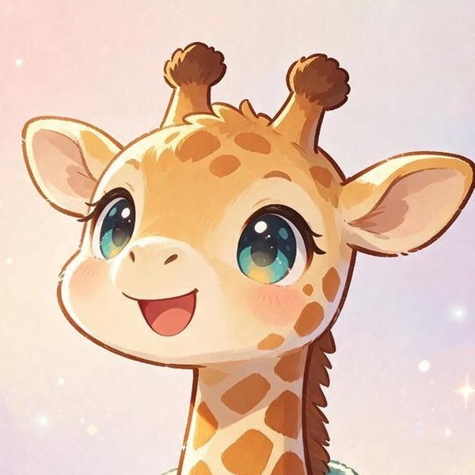
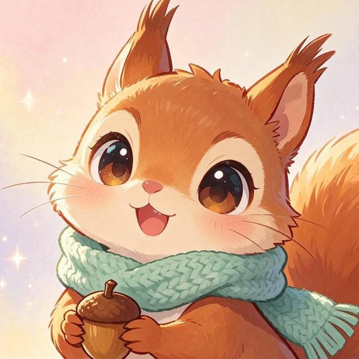
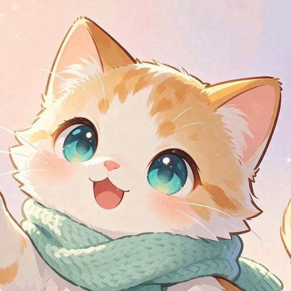
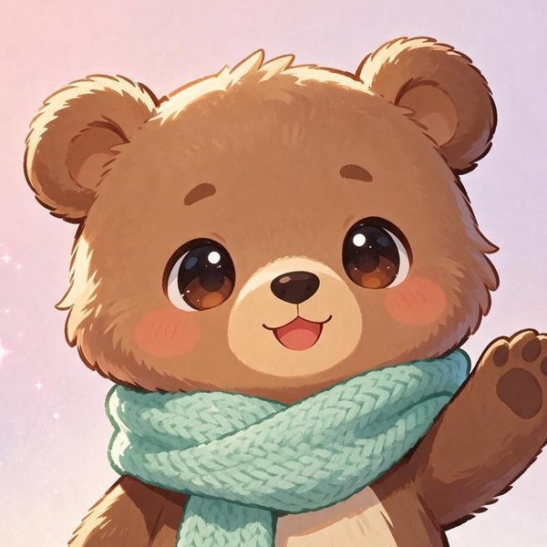
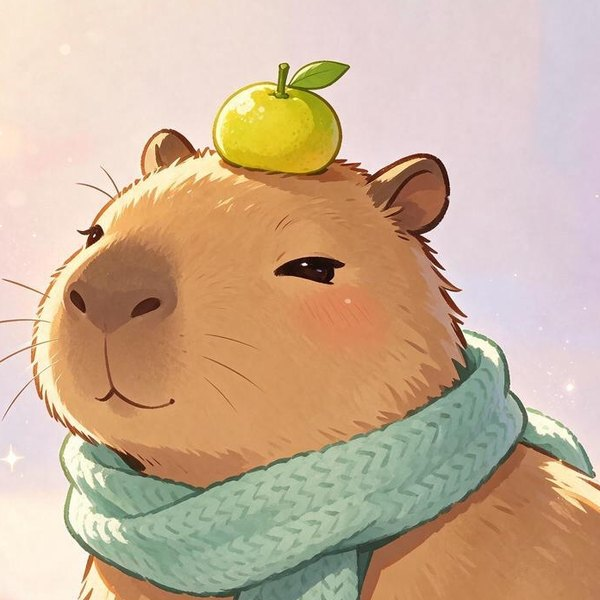
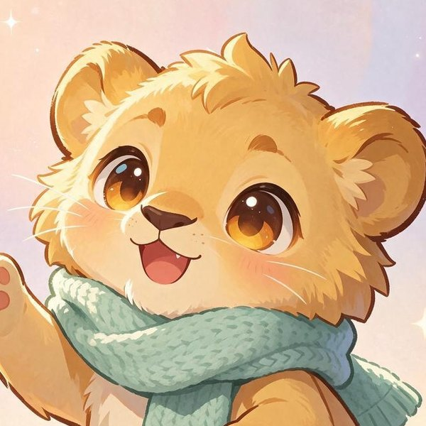
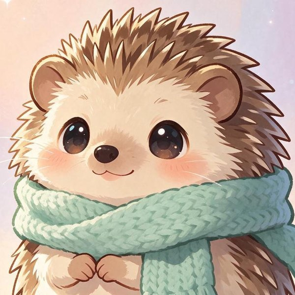
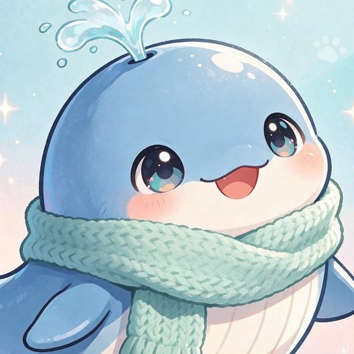

열 가지 사주 동물 설명서
사주에서 '나'를 뜻하는 글자는 딱 하나, 일간이야. 일간은 열 가지 중 하나고, 여기선 그걸 열 마리 동물로 바꿔 불러. 내 동물이 뭔지 모르면 생일을 넣고 와도 되고, 그냥 읽어 봐도 돼.
먼저, 일간이 뭐야?
사주는 태어난 연·월·일·시를 각각 두 글자로 적은 여덟 글자야. 그래서 사주팔자. 그중 태어난 날의 윗글자가 일간이고, 이 글자가 사주에서 '나 자신'을 가리켜. 나머지 일곱 글자는 나를 둘러싼 환경, 사람, 시기 같은 거고.
일간은 갑·을·병·정·무·기·경·신·임·계 열 가지야. 각각 나무·불·흙·쇠·물 다섯 기운(오행)을 양과 음으로 나눈 거야. 예를 들어 갑은 양의 나무(큰 나무), 을은 음의 나무(풀과 덩굴). 같은 나무여도 성격이 다르지.
그래서 일간만 알아도 그 사람의 기본 결이 보여. 이 페이지는 그 열 가지를 동물 하나씩에 빗대서 풀어 놓은 거야.
다섯 기운과 동물

🦒 기린
목 기운양이런 사람이야
너는 큰 나무야. 한번 뿌리내리면 쉽게 안 옮겨지고, 위로 자라는 게 본능이지. 그래서 남들이 보기엔 고집 세 보일 수 있는데, 사실은 방향이 분명한 것뿐이야.
리더 자리가 어색하지 않지? 시키지 않아도 앞에 서게 되고, 책임지는 게 싫지 않아. 대신 꺾이는 걸 못 견뎌서, 안 되는 일도 끝까지 밀다가 지칠 때가 있어.
너한테 필요한 건 '휘어지는 연습'이야. 큰 나무도 바람 불면 가지는 흔들려. 가지가 흔들리는 건 부러지는 게 아니야.
기린의 한마디
“난 위를 보고 쭉쭉 자라는 게 좋아.”
“먼저 가고 있을게, 천천히 따라와!”
잘 통하는 동물
🦫 카피바라 (기己). 사주에서 갑과 기는 서로 끌리는 짝이라고 봐. 누구랑도 잘 지내는 평화주의자인 카피바라가 기린의 빈 곳을 채워 줘.

🐿️ 다람쥐
목 기운음이런 사람이야
너는 풀이고 덩굴이야. 바위를 뚫진 못해도 바위를 타고 넘어가지. 환경이 바뀌어도 금방 적응하고, 어디서든 자기 자리를 찾아내는 재주가 있어.
부드러워 보여서 사람들이 쉽게 보기도 하는데, 그건 몰라서 그래. 넌 포기를 안 해. 방법을 바꿀 뿐이지. 끈기로 치면 열 일간 중에 손에 꼽아.
다만 너무 맞춰주다가 내가 뭘 원했는지 까먹을 때가 있어. 가끔은 덩굴도 자기가 가고 싶은 방향을 먼저 정해야 해.
다람쥐의 한마디
“좁은 틈이라도 괜찮아, 난 들어갈 수 있거든.”
“도토리 하나씩, 차근차근 모으는 중.”
잘 통하는 동물
🦁 아기 사자 (경庚). 사주에서 을과 경은 서로 끌리는 짝이라고 봐. 한번 정하면 직진하는 의리파인 아기 사자가 다람쥐의 빈 곳을 채워 줘.
🐶 강아지
화 기운양이런 사람이야
너는 태양이야. 들어오는 순간 분위기가 바뀌고, 숨기는 걸 못 해. 기분이 얼굴에 다 써 있고, 좋으면 좋다고 바로 말하지. 그래서 사람들이 너를 편하게 느껴.
에너지가 밖으로 향하는 타입이라 혼자 있으면 금방 시들어. 사람 만나고 움직여야 충전이 돼. 주목받는 것도 싫지 않고, 솔직히 좀 좋아하지?
조심할 건 '다 비추려다 나를 못 보는 것'. 남들 챙기느라 정작 내 그늘은 못 볼 때가 있어. 해도 밤엔 쉬어.
강아지의 한마디
“안녕!! 왔어?? 나 기다렸어!!”
“오늘도 햇살 가득이야, 같이 나가자!”
잘 통하는 동물
🦔 고슴도치 (신辛). 사주에서 병과 신은 서로 끌리는 짝이라고 봐. 겉은 뾰족, 속은 반짝이는 완벽주의자인 고슴도치가 강아지의 빈 곳을 채워 줘.

🐱 고양이
화 기운음이런 사람이야
너는 촛불이야. 태양처럼 온 세상을 비추진 않지만, 어두운 방 하나는 확실하게 밝히지. 가까운 사람한테 깊고, 멀리 있는 사람한텐 좀 차가워 보일 수 있어.
감정이 섬세하고 눈치가 빨라. 분위기 변화를 남들보다 먼저 알아채고, 말 안 해도 상대가 뭘 원하는지 알아. 대신 그만큼 쉽게 지쳐.
너한테 필요한 건 '바람막이'야. 촛불은 바람에 약하니까, 너를 흔드는 사람이랑은 거리를 둬도 돼. 그건 차가운 게 아니라 자기를 지키는 거야.
고양이의 한마디
“…옆에 있어줄게. 티는 안 낼 거지만.”
“조용한데 따뜻한 거, 그게 나야.”
잘 통하는 동물
🐳 아기 고래 (임壬). 사주에서 정과 임은 서로 끌리는 짝이라고 봐. 스케일 크고 자유로운 탐험가인 아기 고래가 고양이의 빈 곳을 채워 줘.

🐻 곰
토 기운양이런 사람이야
너는 큰 산이야. 웬만한 일엔 안 흔들리고, 사람들이 기대러 와. 말수가 많진 않아도 있는 것만으로 안심이 되는 사람이지.
변화를 좋아하진 않아. 익숙한 게 편하고, 한번 정한 건 오래 가. 그래서 믿음직한데, 가끔 융통성 없다는 소리도 듣지?
산은 안 움직이는 게 미덕이지만, 사람은 가끔 움직여야 해. 너한테 변화는 위기가 아니라 그냥 계절이 바뀌는 거야.
곰의 한마디
“급할 거 없어. 산은 안 움직이잖아.”
“힘들면 기대. 내가 받쳐줄게.”
잘 통하는 동물
🦦 수달 (계癸). 사주에서 무와 계는 서로 끌리는 짝이라고 봐. 눈치 빠르고 감성 풍부한 물장난꾼인 수달이 곰의 빈 곳을 채워 줘.

🦫 카피바라
토 기운음이런 사람이야
너는 논밭의 흙이야. 뭘 심어도 자라게 하는 땅. 사람을 키우고 챙기는 데 재주가 있고, 네 옆에 있으면 사람들이 편안해져.
다정하고 현실적이야. 거창한 꿈보다 오늘 할 일을 챙기고, 남들이 놓친 디테일을 네가 챙겨. 그래서 팀에 네가 없으면 어딘가 삐걱거려.
근데 땅은 자기를 위해선 아무것도 안 심어. 남 챙기는 만큼 너도 챙겨. 네 밭에도 뭔가 심어야 가을에 거둘 게 있지.
카피바라의 한마디
“다들 모여~ 여기 자리 많아.”
“싸우지 말고 같이 앉자, 응?”
잘 통하는 동물
🦒 기린 (갑甲). 사주에서 기와 갑은 서로 끌리는 짝이라고 봐. 앞장서는 걸 좋아하는 키다리인 기린이 카피바라의 빈 곳을 채워 줘.

🦁 아기 사자
금 기운양이런 사람이야
너는 바위고 쇠야. 단단하고 직선적이고, 돌려 말하는 걸 못 해. 그래서 가끔 세게 들리는데, 뒤끝은 없어. 한번 내 사람이면 끝까지 지키는 의리파지.
결정이 빨라. 고민하는 시간이 아까워서 일단 가고 본다. 틀리면 그때 고치면 되니까. 이게 네 강점이자 사고 치는 지점이기도 해.
쇠는 불을 만나야 쓸모 있는 도구가 돼. 너를 다듬어주는 사람, 때로는 아픈 말 해주는 사람을 곁에 둬. 그게 네 날을 세워줘.
아기 사자의 한마디
“정했으면 가는 거야. 돌아보지 않아.”
“내 사람은 내가 지켜.”
잘 통하는 동물
🐿️ 다람쥐 (을乙). 사주에서 경과 을은 서로 끌리는 짝이라고 봐. 어디든 비집고 들어가는 적응왕인 다람쥐가 아기 사자의 빈 곳을 채워 줘.

🦔 고슴도치
금 기운음이런 사람이야
너는 보석이고 날 선 칼이야. 겉으로는 깔끔하고 빈틈없어 보이는데, 안쪽은 예민하고 섬세해. 기준이 높아서 대충을 못 참지.
미적 감각이 좋고 디테일을 봐. 남들이 '괜찮은데?' 할 때 너만 거슬리는 게 보여. 그래서 결과물은 좋은데, 과정에서 네가 제일 힘들어.
가시를 세우는 건 네가 약해서야. 그걸 아는 사람한테만 가시를 내려. 모두한테 완벽할 필요 없어, 보석은 원래 몇 개만 있는 거야.
고슴도치의 한마디
“가시 세운 거 아니야, 원래 이렇게 생긴 거야.”
“대충은 못 해. 할 거면 제대로.”
잘 통하는 동물
🐶 강아지 (병丙). 사주에서 신과 병은 서로 끌리는 짝이라고 봐. 들어오자마자 분위기 밝히는 해님인 강아지가 고슴도치의 빈 곳을 채워 줘.

🐳 아기 고래
수 기운양이런 사람이야
너는 바다야. 스케일이 크고 자유롭고, 작은 일에 안 묶여. 생각이 깊고 멀리 보는데, 그래서 가끔 눈앞의 일을 놓치지.
지적 호기심이 많고 새로운 걸 좋아해. 한 자리에 오래 있으면 답답해하고, 흐르고 싶어 해. 사람들이 너를 '속을 모르겠다'고 하는 건 깊어서 그래.
바다도 방파제가 있어야 항구가 돼. 네 자유를 지켜주면서 방향은 잡아주는 사람, 그런 사람이랑 있으면 네가 제일 잘 흘러.
아기 고래의 한마디
“바다는 넓어. 어디로든 갈 수 있어.”
“작은 일에 안 흔들려. 난 깊으니까.”
잘 통하는 동물
🐱 고양이 (정丁). 사주에서 임과 정은 서로 끌리는 짝이라고 봐. 은근히 곁을 지키는 따뜻한 불빛인 고양이가 아기 고래의 빈 곳을 채워 줘.
🦦 수달
수 기운음이런 사람이야
너는 비고 이슬이야. 조용히 스며들어서 땅을 적시지. 감수성이 풍부하고 직관이 좋아서, 논리로 설명 못 해도 '그냥 안다'는 게 많아.
말보다 느낌으로 사람을 읽어. 상대 기분이 안 좋으면 너도 같이 가라앉고, 좋으면 같이 떠. 공감력이 좋은 만큼 영향도 많이 받아.
비는 혼자 내리면 그냥 젖는 거고, 땅을 만나야 뭔가를 키워. 네 감성을 받아줄 '땅' 같은 사람이나 일을 찾아. 거기서 네가 피어.
수달의 한마디
“너 기분 안 좋지? 나 다 알아.”
“같이 손잡고 둥둥 떠 있을래?”
잘 통하는 동물
🐻 곰 (무戊). 사주에서 계와 무는 서로 끌리는 짝이라고 봐. 기대도 끄떡없는 듬직함인 곰이 수달의 빈 곳을 채워 줘.
자주 묻는 것
같은 동물이면 성격이 똑같아?
아니. 일간은 여덟 글자 중 하나일 뿐이야. 태어난 달(월지)이 어떤 계절인지, 나머지 글자들이 나를 도와주는지 눌러 주는지에 따라 같은 기린도 전혀 다르게 살아. 그래서 메인 화면에선 다섯 기운의 세기까지 같이 보여 줘.
내 동물이 마음에 안 드는데?
동물은 좋고 나쁨이 없어. 고슴도치의 가시는 까칠함이 아니라 기준이고, 카피바라의 느긋함은 게으름이 아니라 품이야. 단점처럼 보이는 건 대부분 장점이 과하게 나온 거야.
띠랑은 뭐가 달라?
띠는 태어난 해의 아랫글자(연지)야. 열두 가지. 여긴 태어난 날의 윗글자(일간)를 보는 거라 열 가지고, 띠보다 '나'에 훨씬 가까운 글자야.
홈·동물 설명서·서비스 소개·개인정보처리방침·문의
캐릭터 이미지는 AI로 생성한 그림이에요 · © 내 사주 동물